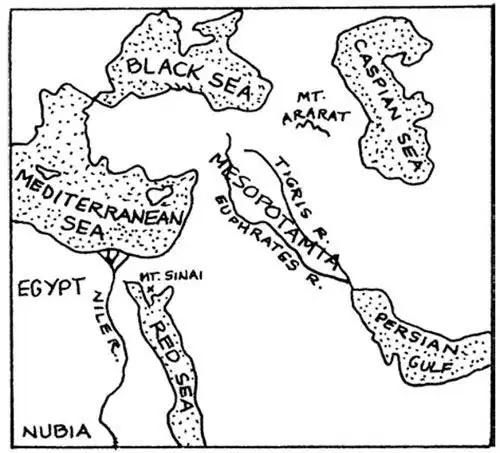

PEOPLE of the Bronze and Iron Ages thought the world was flat, and they knew only a little bit of the world, the small part where they lived; and they thought that if you went too far the world came to an end where you would
If we should go up in an airplane and look down on the world at the place where the first civilized people once lived, we should see several rivers, seas, and a gulf, and from so high up in the air they would look something like this:

Map of Mesopotamia and Mediterranean （美索不达米亚和地中海地图）
Now, you probably have never even heard of these rivers and seas, and yet they have been known longer than any other places in the world. One of these rivers is the Tigris River, and another is the Euphrates. They run along getting closer and closer together until at last they join each other and flow into what is called the Persian Gulf.
You might make these two rivers in the ground of your yard or garden or draw them on the floor if your mother will let you. Just for fun you might name your drinking cup Tigris and your glass Euphrates. Then you might call your mouth, into which they both empty, the Persian Gulf, for you will hear a great many new names by and by, and as grown-up people give names to their houses and boats, to their horses and dogs, why shouldn't you give names to things that belong to you? For instance, you might call your chair, your bed, your table, your comb and brush, even your hat and shoes, after these strange names.
Then, if we flew in our airplane to the west, we should in the northeast corner of Africa see a country called Egypt, a river called the Nile, and a sea now named the Mediterranean. Mediterranean simply means between the land, for this sea is surrounded by land. It is, indeed, almost like a big lake. It is supposed that long, long ago in the Stone Age, there was no water at all where this sea now is, only a dry valley, and that people once lived there.
Along the Nile in what is now Egypt, and along the Tigris and Euphrates in what was then Babylon, Assyria, and Syria, lived people who were recording their activities in writing and pictures that have survived to this day.
Certainly there were cave men and other primitive peoples who were drawing pictures of their way of life. But because travel was not easy in those days, people in one region didn't know a great deal about people in another part of the world. This was soon to change.
Many different groups of people lived in the country of the Tigris and Euphrates and along the Nile, and all of them wanted to own the best land. There were many battles. People moved around a lot——because they lost a battle and had to move or just because they were looking for a better place to live.
One group or family of people called Semites lived in the land that today we call the Middle East, near the Mediterranean Sea and the Tigris and Euphrates. Modern Arabs and Jews are Semites. They speak Semitic languages that are part of one language family and sound very similar. Here's an example. In Hebrew, the word for peace is shalom. In Arabic, the word for peace is salaam.
Another group of people lived along the Nile. In Egypt and other parts of North Africa, Egyptians and people called Berbers were related to the Middle Eastern Semites. Nubians who came from the part of Africa south of Egypt belonged to a group of people called Nilo-Saharans. If you look at a map, you can see how they got this name. They lived along the Nile River and near the Sahara Desert. These Nubians traveled northward along the Nile Valley into Egypt. And sometimes Egyptians traveled south into Nubia.
Another group of people came from the area that is now Iran. They are called Indo-Europeans, and they spread eastward into northern India and westward into Europe. Today, people in Europe, Iran, and India are descended from these early Indo-Europeans. Just like the Semites, they speak languages that are related to each other.
We know now that these ancient peoples moved around a lot more than we used to think they did. They taught each other to grow different kinds of food. They exchanged goods with each other. And sometimes people settled down in the new land and stayed there. Just as the United States has seen many nationalities of people move here and become Americans, people in ancient times also migrated and settled down in a new land.
青铜时代和铁器时代的人认为世界是平的，他们了解的只是世界的很小一部分，也就是他们生活的那一小块地方；他们认为如果你走得太远，就会到世界尽头，你就会
如果我们乘坐飞机向上飞，俯瞰世界上最早期文明人生活过的地方，就会看到几条河流、几片海洋和一个海湾，在这么高的空中，它们看上去就是这样（参见第 20页图）：
有可能你从未听说过这些河流、海洋，但是相比较世界其他地区，它们更早为人所知。其中一条河流叫底格里斯河，还有一条叫幼发拉底河，它们奔流着，逐渐越靠越近，最后交汇在一起流入现在所谓的波斯湾。
如果你妈妈同意，你可以在自家的院子、花园里的地上做出这两条河，或在地板上把这两条河画一画。出于好玩，你也可以把你的喝水杯叫做“底格里斯”，把你的玻璃杯叫做“幼发拉底”。杯子里的东西最后都流进到你的嘴里，所以，你可以把你的嘴巴叫“波斯湾”，因为，你会逐渐听到很多的新名词，就像大人给他们的房子、船、马、狗取名字一样，你为什么不能给自己的东西取名字呢？比如说，你可以用那些奇怪的名字给你的椅子、床、桌子、梳子、牙刷甚至帽子、鞋子命名。
如果我们乘坐飞机往西飞行，在非洲的东北角就会看到一个叫埃及的国家，一条叫尼罗河的河和一片现在称为地中海的海洋。地中海的意思就是位于陆地之间，因为它被陆地包围着。实际上，它就几乎像是一个大湖泊。据推测，在很久以前的石器时代，在现在地中海的地方根本就没有水，只有一个干涸的山谷，而且曾经有人在那儿居住。
居住在今天埃及尼罗河沿岸，和居住在昔日的巴比伦、亚述、叙利亚的底格里斯河和幼发拉底河沿岸的人，当时用文字和图画记载了他们的生活，这些记载保存至今。
当然，穴居人和其他原始人也用图画记载了他们的生活方式，但是由于当时的交通还不便利，所以一个地区的人对另一地区的人不大了解。这一点很快就要改变。
生活在底格里斯河、幼发拉底河沿岸，以及生活在尼罗河沿岸的群落很多，他们都想拥有最肥沃的土地，所以发生了多次的战争。人们经常迁移——因为打了败仗，不得不迁走，或者因为要寻找一个更好的居住地。
有一个叫“闪米特人”的部落居住在我们今天称为中东的地方，靠近地中海、底格里斯河和幼发拉底河。现代的阿拉伯人和犹太人都是闪米特人。他们所说的各种闪米特语都属于一个语系，发音很相似。举个例子，“和平”一词在希伯来语中是 shalom ，而在阿拉伯语中是salaam 。
尼罗河沿岸居住着另一个部落。埃及和北非其他地区的埃及人和被称为柏柏尔的人与中东的闪米特人有血缘关系。来自非洲埃及以南的努比亚人则属于尼罗—撒哈拉族。看一下地图你就会知道他们的名字从何而来。他们都沿着尼罗河居住，靠近撒哈拉大沙漠。这些努比亚人沿着尼罗河河谷向北迁移进入埃及。有时埃及人也往南迁移到努比亚。
另一批人来自今天所谓伊朗的地方，他们被称为印欧人。他们向东迁移进入印度北部，向西迁移进入欧洲。今天的欧洲人、伊朗人和印度人都是这批远古印欧人的后代。和闪米特人一样，他们的语言互相有联系。
我们现在知道，这些古代民族迁移的次数远比我们曾经认为的要多得多。他们教会对方种植不同的作物，也彼此交换物品。有时，人们在一片土地上安家，长期定居下来。如同今天的美国，很多不同民族的人来到这里成为了美国人，古代人也四处迁徙，然后在新的土地上定居下来。